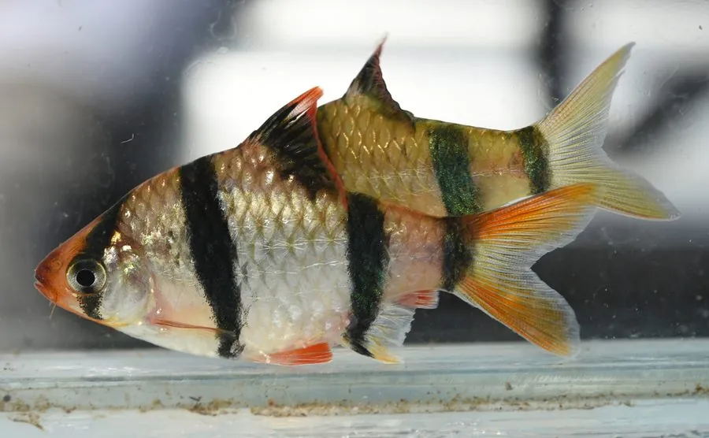

鱼类 · 动物界
虎皮鱼 Puntigrus tetrazona

原产苏门答腊和婆罗洲的小型鲤科鱼，体侧有四条黑色竖纹，活泼好动，是水族箱中很受欢迎的群游观赏鱼。
- 分类
- 门脊索动物门纲硬骨鱼纲目鲤形目科鲤科属鲃属
- 栖息环境
- 苏门答腊、婆罗洲等地的河流、沼泽和溪流，喜弱酸性软水
- 地理分布
- 印度尼西亚苏门答腊和婆罗洲，作为观赏鱼被引种到世界各地
- 保护级别
- 暂无评估
物种志
虎皮鱼体呈卵圆形、侧扁，体色金黄或淡黄，体侧有四条醒目的黑色垂直宽纹，因形似虎皮而得名，也有人叫它“四间鱼”。成鱼体长一般 5–7 cm，雌鱼体型比雄鱼更丰满，雄鱼的吻部和鳍条在繁殖期会泛红。
虎皮鱼原产印度尼西亚的苏门答腊、婆罗洲等地的河流和沼泽，喜欢水温较高、弱酸性的软水，常成群活动。它是杂食性鱼类，吃小型甲壳类、昆虫幼虫、藻类和人工饲料。繁殖时雌鱼在水草间产卵，每次数百粒，亲鱼有吞食鱼卵的习性，因此繁殖时通常要把卵隔离。虎皮鱼生性好动，游速快，还会啃咬游动缓慢的鱼的鳍条，混养时需要留意。它是全球水族市场常见的观赏鱼，人工繁殖技术成熟，在部分热带地区也有逃逸个体建立野外种群。目前它没有IUCN 的正式评估，中国未将其列入国家重点保护野生动物名录。
形态与习性
- 食性杂食性，吃小型甲壳类、昆虫幼虫、藻类和人工饲料
- 体长一般 5–7 cm
- 寿命约 3–5 年
- 繁殖雌鱼在水草间产卵，每次数百粒，需隔离鱼卵
- 性情活泼好动，有啃咬慢游鱼类鳍条的习性
- 水温适宜水温 24–28 ℃，弱酸性软水
趣味知识
- 虎皮鱼体侧的黑色竖纹像老虎的斑纹，因此得名。
- 它有一个不太受欢迎的习惯：会啃咬游得慢的鱼的鳍条。
- 虎皮鱼游动迅速、喜欢群游，在水族箱里格外活跃。